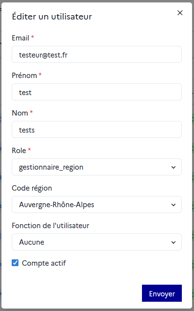

Modifier/désactiver un profil utilisateur
Il est possible à tout moment modifier toutes les informations du formulaire de création de compte. Pour cela, cliquer sur le pictogramme correspondant à la ligne de l’utilisateur dans la colonne « Actions » de la table.
Dans la fenêtre « Éditer un utilisateur », on peut notamment :
Changer le rôle de l’utilisateur pour modifier ses permissions (sans modifier la fonction que vous avez indiquée) ;
Décocher
Compte actifpour désactiver temporairement ou définitivement l’accès à Orion pour ce compte.
